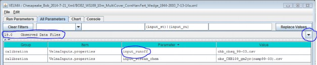
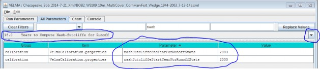

Years to Compute Nash-Sutcliffe for Runoff
The VELMA Simulator Calculates a Nash-Sutcliffe Value for Runoff
Whenever possible, the VELMA simulator automatically computes a Nash-Sutcliffe Coefficient for observed vs.simulated annual runoff values. In order to calculate the runoff Nash-Sutcliffe, the simulator must know whichspan of years to include in the calculation, and have observed runoff data for those years available.
To ensure that the VELMA simulator is able to compute a meaningful Nash-Sutcliffe value for your simulation run,provide values for the following configuration parameters.
Set the Observed Runoff Source File
Click the All Parameters tab's configuration outline dropdown selector and select item "19.0 Observed DataFiles". The All Parameters table should then look like this:

Set the input_runoff parameter to the name of a .csv file containing valid observed runoff data. A validfile has a single column of floating-point data, one day's observed runoff value per row. There must be exactlyas many rows in the file as there are days in the simulation configuration's
forcing_start to forcing_end parameter's span of years. (E.g. if forcing_start = 2000 and
forcing_end = 2001, then there must be 366 + 365 or 731 rows of data in the file.) The specified file's locationis assumed to be the directory specified by the inputDataLocationRootName +inputDatalocationDirName.
Set the Years to Simulation the Nash-Sutcliffe
Click the All Parameters outline dropdown selector again, and this time select item "18.0 Years to ComputeNash-Sutcliffe for Runoff". The All Parameters table should then look like this:

The nashSutcliffeStartYearForRunoffStats and nashSutcliffeEndYearForRunoffStats specify the firstand last years of the simulation run that are used to compute the Nash-Sutcliffe coefficient. Obviously, thesestart and end year values must be within the range of the simulation run's start and end years as a whole. Forexample, if your simulation runs from 1995 to 2005, you cannot specify years 1980 to 2009 as the span forcomputing the Nash-Sutcliffe.
The VELMA Simulator Writes the Nash-Sutcliffe Coefficient for Runoff to an Output File
The VELMA simulator writes the Nash-Sutcliffe coefficient for runoff to a file named"NashSutcliffeCoefficients.txt". This is a simple text file, created in the directory specified by thesimulation configuration's intializeOutputDataLocationRoot parameter.
The file contains a single line, reporting the Nash-Sutcliffe result like this:
Nash-Sutcliffe Coefficient=0.8045351825866978 Loop=1 Years=[1969 to 2008]
The Computed Nash-Sutcliffe Value is Only as Accurate as the Observed Data
The auto-computation of the Nash-Sutcliffe coefficient for runoff is convenient, but it is only as accurate asthe observed data and year's span allow it to be.